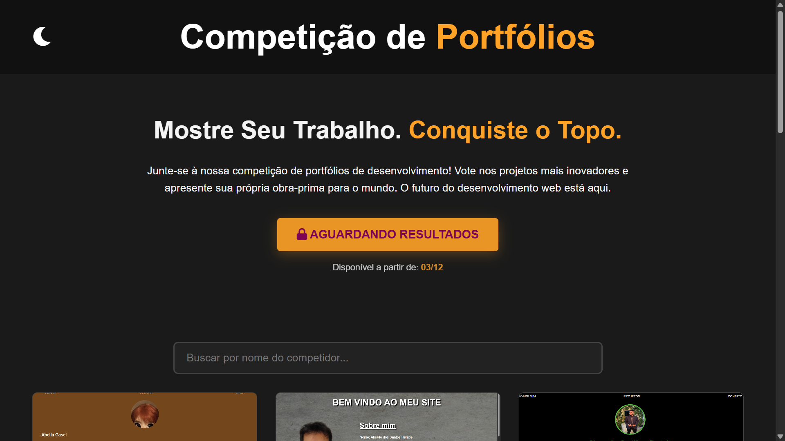

Competição de Portfólios
Plataforma web desenvolvida voluntariamente para a Faci Wyden. Sistema de galeria, busca e votação gamificada de projetos acadêmicos.
Plataforma web desenvolvida voluntariamente para a Faci Wyden. Sistema de galeria, busca e votação gamificada de projetos acadêmicos.
Ecossistema de impacto social para reciclagem. Inclui mapa de coletas, eventos e sistema de usuários.
Releitura moderna do clássico Snake com estética Neon e sistema de ranking global persistente.
Assistente virtual de desktop com interface moderna (PyQt) e integração de IA em tempo real via API do Google Gemini.

Aplicação desktop para gestão de produtividade com operações CRUD completas e interface gráfica nativa.
RPG de batalha por turnos com sistema de tipos, evolução, inventário e persistência de dados.

Análise de ações em tempo real com gráficos interativos e filtros de dados financeiros.
Protótipo de gestão clínica modular com controle de sessão, dashboard e prontuários.
Jogo de ação top-down com IA avançada (Pathfinding A*) e geração procedural de salas.

Simulador de jogos de aposta (Roleta, Blackjack) focado em lógica de programação e matemática.
Aplicação desktop de lógica forense que classifica suspeitos baseada em padrões de respostas.
Quiz interativo com feedback em tempo real e gráficos de desempenho ao final.
Estrutura robusta de autenticação segura com criptografia e controle de acesso.

Site institucional dinâmico (SPA-feel) com carregamento assíncrono e design temático espacial.